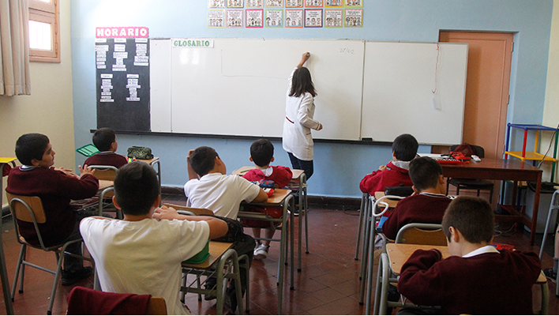

Monsalve por dichos de Bullrich sobre Hezbolá: "Uno se pregunta si es por la seguridad o por dañar la imagen del país"
PDI confirma que iraníes detenidos en 2023 no han salido del país por pasos habilitados y descarta presencia de Hezbolá
 “Un insulto a los chilenos”: gobierno envía carta a Congreso estadounidense contra senador que planteó vínculo de Hezbollah y Chile
“Un insulto a los chilenos”: gobierno envía carta a Congreso estadounidense contra senador que planteó vínculo de Hezbollah y Chile
 Extenista chilena es suspendida por no cooperar en una investigación por corrupción de partidos
Extenista chilena es suspendida por no cooperar en una investigación por corrupción de partidos
 Así se ve el desayuno ideal para un adulto, según los especialistas
Así se ve el desayuno ideal para un adulto, según los especialistas
 Cuándo se vota la censura a la mesa de la Cámara de Diputados, cómo procede y qué podría suceder si se acoge
Cuándo se vota la censura a la mesa de la Cámara de Diputados, cómo procede y qué podría suceder si se acoge
Cariola (PC) llama a la oposición a "recapacitar" por censura en su contra: "Espero que no tengan los votos"
El extranjero que trabajaba en Chile y fue extraditado acusado de secuestro y robo a miembros del Ejército de EE.UU.
Colmed y baja vacunación: "El Gobierno tiene un problema comunicacional (...) hay una deficiencia en atacar varios frentes"

Corte de Antofagasta ordena a Seremi entregar cupo a 12 alumnos no seleccionados por sistema SAE